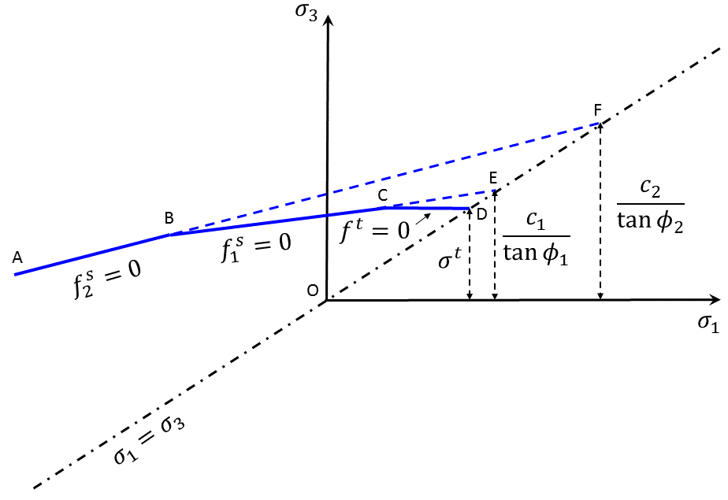
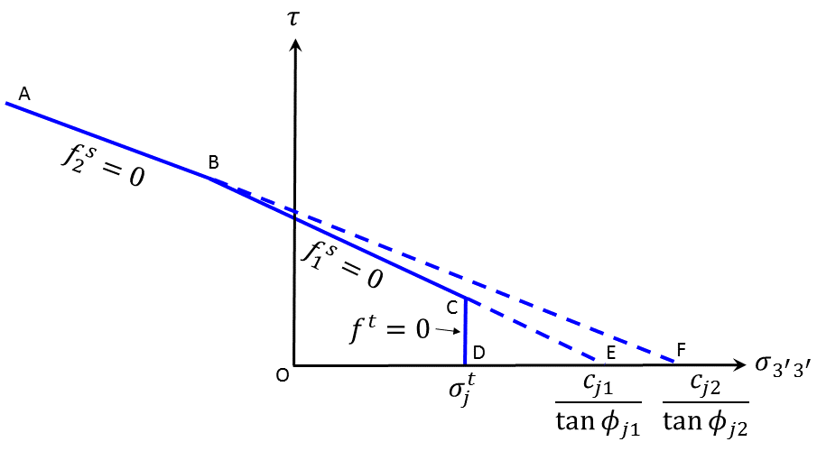

双线性应变软化/硬化遍布节理（SUBI）模型
双线性应变软化/硬化遍布节理（简称 SUBI）模型是 遍布节理模型（ubiquitous-joint model） 的推广。双线性模型中，基质与节理的破坏包络是两个 Mohr-Coulomb 模型（Mohr-Coulomb model） 准则与拉伸截断的复合，可按指定法则硬化或软化。剪切塑性流动采用非关联流动法则，拉伸塑性流动采用关联流动法则。
基质与节理的软化行为以表格给出，用四个独立硬化参数（基质两个、节理两个）分别度量塑性剪切应变与拉伸应变量。在该数值模型中，先判别该步的整体破坏并施加相应塑性修正，随后分析新应力在软弱面上的破坏并据此更新。若发生塑性流动则递增硬化参数，并用表格调整基质与节理的黏聚力、摩擦、剪胀与抗拉强度。
公式
基质的破坏准则与流动法则
该模型所用基质破坏准则示意于 图 1（Figure 1） 的主应力平面 \(({\sigma}_1,{\sigma}_3)\) 中。（注意压应力为负，且按约定 \({\sigma}_1 \leq {\sigma}_2 \leq {\sigma}_3\)。）
破坏包络由两个 Mohr-Coulomb 破坏准则（线段 \(A-B\) 与 \(B-C\) 上 \(f_2^s\) = 0 与 \(f_1^s\) = 0）以及线段 \(C-D\) 上的拉伸破坏准则 \(f^t\) = 0 定义。
剪切破坏准则具有一般形式 \(f^s\) = 0。线段 \(A-B\) 上由黏聚力 \(c_2\) 与摩擦角 \(\phi_2\) 表征，线段 \(B-C\) 上由黏聚力 \(c_1\) 与摩擦角 \(\phi_1\) 表征。拉伸破坏准则由抗拉强度 \(\sigma^t\)（正值）指定；于是有
其中
注意拉伸截断作用于剪切包络的线段 \(B-C\)；对摩擦角 \(\phi_1\) 非零的材料，抗拉强度的最大值为


图 1：FLAC3D 双线性基质破坏准则。
模型表述中，先由总应变增量计算该步应力的弹性试探。若相应应力点 \((\sigma_1^I,\sigma_3^I)\) 落在 图 1（Figure 1） 中破坏面表示之外，则判定塑性屈服。此时必须对弹性试探施加应力修正，其确定方式是允许塑性流动发生，以恢复 \(f_2^s\) = 0、\(f_1^s\) = 0 或 \(f^t\) = 0（视应力点位于 \(A-B\)、\(B-C\) 或 \(C-D\) 之上而定）。（在 \(B\) 与 \(C\) 处用角平分线划分归属于屈服面特定线段的破坏域。）
按通常假定，总应变增量可分解为弹性与塑性部分。塑性屈服的流动法则形式为
其中 \(i\) = 1,3。剪切屈服的势函数 \(g\) 为 \(g^s\)。该函数对应非关联法则，
其中剪胀角 \(\psi\) 在沿 \(A-B\) 破坏时等于 \(\psi_2\)，沿 \(B-C\) 时等于 \(\psi_1\)，且
拉伸屈服的势函数为 \(g^t\)，对应关联流动法则，
剪切破坏的塑性应变增量形式为
剪切破坏的应力修正为
其中
并且按定义：
反过来，拉伸破坏的塑性应变增量形式为
拉伸破坏的应力修正为
其中
软弱面的破坏准则与流动法则
经基质塑性流动修正后的应力被分解为平行与垂直于软弱面的分量，并检验遍布节理破坏。破坏准则以软弱面上切向牵引分量大小 \(\tau = \sqrt{{{\sigma}_{1'3'}}^2 + {{\sigma}_{2'3'}}^2}\) 与法向牵引分量 \(\sigma_{3'3'}\) 表示。
破坏准则示于 图 1（Figure 1），对应两个 Mohr-Coulomb 破坏准则（线段 \(A-B\) 上 \(f_2^s\) = 0，线段 \(B-C\) 上 \(f_1^s\) = 0）与一个拉伸破坏准则（线段 \(C-D\) 上 \(f^t\) = 0）。各剪切准则具有一般形式 \(f^s\) = 0，并由黏聚力与摩擦角 \(c_j, \phi_j\) 表征：沿线段 \(A-B\) 等于 \(c_{j_2}, \phi_{j_2}\)，沿 \(B-C\) 等于 \(c_{j_1}, \phi_{j_1}\)。拉伸准则由抗拉强度 \(\sigma_j^t\)（正值）指定。于是有
注意对摩擦角非零的软弱面 \({\phi}_{j_1}\)，抗拉强度的最大值为


图 2：FLAC3D 双线性节理破坏准则。
屈服判别与应力修正采用与基质情形所述相似的技术。
此处塑性屈服的流动法则形式为
其中 \(\gamma\) 为与 \(\tau\) 关联的应变变量，且有
软弱面上剪切屈服的势函数 \(g\) 为 \(g^s\)，对应非关联法则，
其中剪胀角 \(\psi_j\) 在沿 \(A-B\) 破坏时等于 \(\psi_{j_2}\)，沿 \(B-C\) 时等于 \(\psi_{j_1}\)。
软弱面上拉伸屈服的势函数 \(g\) 为 \(g^t\)，对应关联流动法则，
剪切破坏的局部塑性应变增量满足
剪切破坏的应力修正为
其中
且上标 \(^O\) 表示刚在判别出软弱面破坏之前所得的值。
软弱面上局部剪应力分量的塑性修正通过缩放导出：
反过来，拉伸破坏的局部塑性应变增量形式为
拉伸破坏的应力修正为
其中
方位的大应变更新
大应变下软弱面的方位按网格单元调整，以计入刚体转动与变形引起的转动。方位的大应变更新（large-strain update to orientation） 与 遍布节理模型（ubiquitous-joint model） 中所述相同。
硬化参数
在双线性应变软化/硬化遍布节理模型中，塑性开始后基质与节理的某些或全部网格单元屈服参数（即黏聚力、摩擦、剪胀与抗拉强度）按输入中以硬化参数取值范围规定的分段线性法则自动改变。（见 应变软化/硬化模型（strain-softening/hardening model） 中 用户定义函数（user-defined functions） 一节。）必须在 设置网格单元属性（zone property）（FLAC3D）或 设置块体网格单元属性（block zone property）（3DEC）命令中为每个软化参数指定表格编号。（若未指定表格性质编号，则该参数取为常数。）相应表格数据含参数值与性质值的数值对，其间假定线性变化。对超出表格中所指定最后一个硬化参数值的取值，使用最后一个性质值。
本模型使用四个独立的硬化参数：
- \({\kappa}^s\) 度量基质塑性剪应变，用于更新基质黏聚力、摩擦与剪胀；
- \({\kappa}^t\) 度量基质塑性体积拉应变，用于更新基质抗拉强度；
- \({\kappa}_j^s\) 估算节理塑性剪应变，并控制节理黏聚力、摩擦与剪胀的更新；以及
- \({\kappa}_j^t\) 计算节理塑性体积拉应变，并控制节理抗拉强度的更新。
这些参数定义为网格单元塑性应变增量度量的累积。网格单元硬化增量按网格单元所含全部四面体上硬化增量的体积平均计算。
四面体的剪切硬化增量是该步塑性剪切应变偏量增量张量第二不变量的平方根。对基质，给出为
其中 \(\Delta {\epsilon}_m^{p_s}\) 为平均塑性应变增量，
而塑性应变增量由公式 (9) 给出，其中 \({\lambda}^s\) 用公式 (11)。
对节理，公式为
其中塑性应变增量由公式 (23) 给出（见公式 (20)），\({\lambda}^s\) 采用形式 (25)。
四面体拉伸硬化增量为塑性体积拉应变增量。
对基质，有
其中塑性应变增量由公式 (13) 给出，\({\lambda}^t\) 用公式 (15)。
对节理，其表达式为
其中塑性应变增量由公式 (27) 给出，\({\lambda}^t\) 用公式 (29)。
实现步骤
FLAC3D 中双线性模型的实现按上述进行。先由该步应力增量（对总应变增量 \(\Delta {\epsilon}_{ij}\) 应用虎克定律求得）得到弹性试探 \({\sigma}_{ij}^I\)。计算并排序主应力，使 \({\sigma}_1^I \leq {\sigma}_2^I \leq {\sigma}_3^I\)，并用公式 (1) 与 (2) 定义的屈服准则检验基质破坏。原则上，若应力点 \((\sigma_1^I,\sigma_3^I)\) 的表示落在 图 1（Figure 1） 中屈服面之外，则判定为基质破坏。此时对弹性试探的主值施加应力修正，修正量取决于应力点位于 \(A-B\)、\(B-C\) 还是 \(C-D\) 之上。（在 \(B\) 与 \(C\) 处用角平分线划分归属于屈服面特定线段的破坏域。）
基质剪切破坏的应力修正由公式 (10) 与 (11) 给出，其中黏聚力 \(c\)、摩擦 \(\phi\) 与剪胀 \(\psi\) 参数在沿 \(A-B\) 破坏时取 \(c_2, \phi_2, \psi_2\)，在沿 \(B-C\) 破坏时取 \(c_1, \phi_1,\psi_1\)。
基质拉伸破坏的应力修正由公式 (14) 与 (15) 给出。
随后假定塑性流动期间主方向不变，由修正后的主值计算参考轴系中的应力张量分量 \({\sigma}_{ij}^O\)。
软弱面上的局部牵引分量定义为 \({\sigma}_{3'3'}\) 与 \(\tau\)，其中 \({\sigma}_{3'3'}\) 为法向分量，\(\tau = \sqrt{{{\sigma}_{1'3'}}^2 + {{\sigma}_{2'3'}}^2}\) 为切向牵引分量的大小。（局部轴 1 沿倾向，2 沿走向，3 为软弱面法向。）这些应力由 \({\sigma}_{ij}^O\) 分解得到，并用屈服准则（公式 (16) 与 (17)）检验遍布节理破坏。原则上，若应力点 \((\sigma_{3'3'}^O,\tau^O)\) 的表示落在 图 2（Figure 2） 中屈服面之外，则判定为遍布节理破坏。此时施加局部应力修正，修正量取决于应力点在 \(A-B\)、\(B-C\) 或 \(C-D\) 附近的位置。（在 \(B\) 与 \(C\) 处用角平分线划分归属于屈服面特定线段的破坏域。）
节理剪切破坏的应力修正由公式 (24) 到 (26) 给出，其中黏聚力 \(c_j\)、摩擦 \(\phi_j\) 与剪胀 \(\psi_j\) 参数在沿 \(A-B\) 破坏时取 \(c_{j_2}, \phi_{j_2}, \psi_{j_2}\)，在沿 \(B-C\) 破坏时取 \(c_{j_1}, \phi_{j_1}, \psi_{j_1}\)。
节理拉伸破坏的应力修正由公式 (28) 与 (29) 给出。
最后把局部应力分量转回全局轴。
大应变模式下，按网格单元调整软弱面的单位法向，以计入物体转动。
确定该步新应力后，用公式 (30)、(32)、(33) 与 (34) 递增硬化参数。随后用这些参数从可用输入表格确定基质与节理的黏聚力、摩擦、剪胀与抗拉强度新值。
假定材料抗拉强度永不增大。此外对有摩擦的材料，该值不超过最大值 \({\sigma}_{max}^t\) 或 \({{\sigma}_j^t}_{max}\)（见公式 (4) 与 (18)）。
注意默认情况下基质与节理中的屈服模型都是线性的，此时只识别屈服曲线的第 1 段（其中 \(f_1^s\) = 0）与第 3 段（其中 \(f^t\) = 0）（即便为第 2 段（其中 \(f_2^s\) = 0）赋予了性质）。要激活双线性法则，必须把性质 flag-bilinear 和/或性质 flag-bilinear-joint 设为 1。
此外，若第 1 段与第 2 段的摩擦角变得相等，则模型被视为线性，第 2 段将被忽略（视情况针对基质和/或节理）。若第 1 段与第 2 段的交点对应违反拉伸准则的应力点，第 2 段也将被忽略。
softening-ubiquitous 模型性质
用以下关键字配合 设置网格单元属性（zone property）（FLAC3D）或 设置块体网格单元属性（block zone property）（3DEC）命令设置双线性应变软化/硬化遍布节理模型的这些性质。
- softening-ubiquitous
- bulk f
弹性体积模量，\(K\)
- cohesion f
基质黏聚力 \(c\) = \(c_1\)
- cohesion-2 f
基质黏聚力 \(c_2\)
- dip f
弱面的倾角，单位为度
- dip-direction f
弱面的倾向，单位为度
- friction f
基质摩擦角 \(\phi\) = \(\phi_1\)
- friction-2 f
基质摩擦角 \(\phi_2\)
- poisson f
泊松比，\(\nu\)
- shear f
弹性剪切模量，\(G\)
- young f
杨氏模量，\(E\)
- joint-cohesion f
节理黏聚力 \(c_j\) = \(c_{j1}\)
- joint-cohesion-2 f
节理黏聚力 \(c_{j2}\)
- joint-friction f
节理摩擦角 \(\phi_j\) = \(\phi_{j1}\)
- joint-friction-2 f
节理摩擦角 \(\phi_{j2}\)
- normal v
弱面的法向方向（\(n_x\)，\(n_y\)，\(n_z\)）
- normal-x f
弱面法向方向的 x 分量，\(n_x\)
- normal-y f
弱面法向方向的 y 分量，\(n_y\)
- normal-z f
弱面法向方向的 z 分量，\(n_z\)
- flag-bilinear-joint i (a)
= 0 (default) for joint linear model ;
= 1 for joint bilinear model ;
< 0 时节理效应被跳过，模型退化为双线性 Mohr-Coulomb 模型。
- flag-brittle b (a)
若为真，则在发生拉伸破坏时把拉伸极限设为 0。默认为 false。
- table-cohesion s (a)
把基质黏聚力 \(c\) = \(c_1\) 与基质塑性剪应变关联的表格名称。
- table-cohesion-2 s (a)
把基质黏聚力 \(c_2\) 与基质塑性剪应变关联的表格名称。
- table-dilation s (a)
把基质剪胀角 \(\psi\) = \(\psi_{1}\) 与基质塑性剪应变关联的表格名称。
- table-dilation-2 s (a)
把基质剪胀 \(\psi_{2}\) 与基质塑性剪应变关联的表格名称。
- table-friction s (a)
把基质摩擦 \(\psi\) = \(\psi_{1}\) 角与基质塑性剪应变关联的表格名称。
- table-friction-2 s (a)
把基质摩擦角 \(\psi_{2}\) 与基质塑性剪应变关联的表格名称。
- table-joint-cohesion s (a)
把节理黏聚力 \(c_j\) = \(c_{j1}\) 与节理塑性剪应变关联的表格名称。
- table-joint-cohesion-2 s (a)
把节理黏聚力 \(c_{j2}\) 与节理塑性剪应变关联的表格名称。
- table-joint-dilation s (a)
把节理剪胀 \(\psi_j\) = \(\psi_{j1}\) 与节理塑性剪应变关联的表格名称。
- table-joint-dilation-2 s (a)
把节理剪胀 \(\psi_{j2}\) 与节理塑性剪应变关联的表格名称。
- table-joint-friction s (a)
把节理摩擦角 \(\phi_j\) = \(\phi_{j1}\) 与节理塑性剪应变关联的表格名称。
- table-joint-friction-2 s (a)
把节理摩擦角 \(\phi_{j2}\) 与节理塑性剪应变关联的表格名称。
- table-joint-tension s (a)
把节理拉伸极限 \(\sigma^t_j\) 与节理塑性拉应变关联的表格名称。
- strain-shear-plastic f (r)
累计塑性剪应变
- strain-shear-plastic-joint f (r)
累积节理塑性剪应变
- strain-tensile-plastic f (r)
累计塑性拉应变
- strain-tensile-plastic-joint f (r)
累积节理塑性拉应变
图例
- (a) 高级属性。
- 该属性具有默认值；在较简单的模型应用中，无需专门赋值。
- (r) 只读属性。
- 该属性不能由用户设置，但可以列出、绘图显示，或通过 FISH 访问。
注意事项
- 定义弹性只需两种选项之一：体积模量 \(K\) 与剪切模量 \(G\)，或杨氏模量 \(E\) 与泊松比 \(\nu\)。选择后者时，必须先赋予杨氏模量 \(E\) 再赋予泊松比 \(\nu\)。
- 定义软弱面方位只需三种选项之一：倾角与倾向；法向向量（\(n_x, n_y, n_z\)）；或三个法向分量 \(n_x\)、\(n_y\) 与 \(n_z\)。
- 抗拉截断为 \({\sigma}^t = min({\sigma}^t, c/\tan \phi)\)。
- 模型采用的节理抗拉强度为输入的 \(\sigma^t\) 与 \({c_j}/{\tan \phi_j}\) 中的较小值。
- 拉伸表与 flag-brittle 不应同时处于活动状态。
| 这些内容对您有帮助吗？… | FLAC3D © 2019, Itasca | 原文更新于 2020 年 10 月 8 日 |